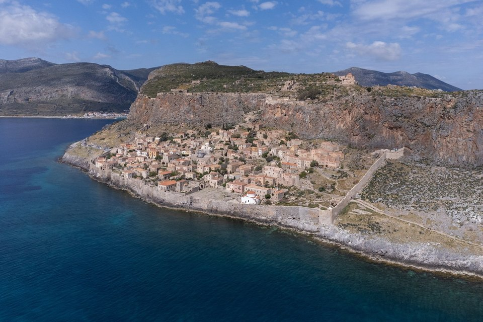

Greece · Monemvasia
Monemvasia audio guide
7 stops · 10 min
This guide is free
Every recorded stop plays here.
The sea-girt rock town, Byzantine churches, and fortress ridge reached across a causeway. Listen here, or get the Earwise app to play as you walk.
Stops
- 1
The single entrance
On the causeway, looking at the great rock ahead. This is stop 1 on the route.
Play0:00 / –:––Read along
Monemvasia is a great rock off the Laconian coast, tied to the shore by a narrow causeway and a bridge. Its name comes from Greek words for a single way in, the one link with the mainland.
The rock runs for about one and a half kilometres and rises almost two hundred metres above the sea. From the mainland, neither of its two walled towns can be seen.
The town's own history tells that a strong earthquake in 375 AD cut a headland off from the coast and turned it into an island.
Europeans turned the Greek name into Malvasia. Under that name, the same history says, its sweet wine became a luxury sought by kings, and Shakespeare mentions it in Richard III.
It adds that the Ottoman rulers banned the wine in 1545, and the old way of making it was lost.
In the twentieth century, Nikos Kazantzakis called it the Gibraltar of Greece, and Yiannis Ritsos a ship of stone.
Early in that century most people moved across to the new village of Gefyra, at the landward end of the bridge, and the old town emptied. In 1965 the state placed the entire peninsula under protection as a historic monument.
- 2
The town gate
At the fortified gate into the lower town. This is stop 2 on the route.
Play0:00 / –:––Read along
The town gate is the main way into the lower town, a vaulted passage through the middle of the western wall. Marble faces the gate, and a marble machicolation once guarded it from above.
The lower town lay on the south-eastern slope, where sailors and merchants made their homes. A wall shaped like the Greek letter pi closed it on three sides, and the steep cliffs above served on the fourth.
Beyond the gate runs the main street, which the Byzantines called the Middle Street. Traders kept their shops and workrooms at street level along it, and it was the commercial spine of the town. The street carries the name of the poet Yiannis Ritsos.
The local history dates the first settlers from Laconia to 582 or 583 AD, on the summit of the rock.
People took refuge on the rock in troubled centuries, and the settlement soon spread down the slope into the lower town. The local history places that growth shortly after 900 AD.
Its seafarers won tax exemptions and a measure of self-rule from the Byzantine emperors. Space was so tight that houses were packed together, and in places they were built right over the lanes.
The local history calls the thirteenth and fourteenth centuries a golden age, with some eight thousand people and forty churches.
- 3
Christ Elkomenos
In the small square on the main street of the lower town, by the church with the bell tower. This is stop 3 on the route.
Play0:00 / –:––Read along
Christ Elkomenos stands on the main square of the lower town, and it served as the cathedral of Monemvasia. The name means Christ in chains.
Its first building probably goes back to the sixth or seventh century, and it was rebuilt on a large scale in the eleventh. It is a basilica with a central dome, three semicircular arches at its eastern end and a domed porch to the west.
The dome and the porch were added in 1697, and the bell tower on the north-west side came later.
Local accounts say that the emperor Isaac II Angelos carried its icon of Christ in chains away to Constantinople.
Across the square stands a mosque built under Ottoman rule in the sixteenth century.
In 1460 the townspeople handed the city to Pope Pius II, hoping to escape Ottoman rule.
In 1463 they gave it up again, this time to Venice. The local history counts Monemvasia as the last Byzantine stronghold to fall.
- 4
Panagia Chrysafitissa and the Portello
On the wide square at the eastern end of the lower town, by the small white church above the sea wall. This is stop 4 on the route.
Play0:00 / –:––Read along
Panagia Chrysafitissa stands on the broad open ground of the great bastion, above the southern sea wall.
It was built during the first period of Ottoman rule, which ran from 1540 to 1690, and the Ministry of Culture dates it to the sixteenth century.
Tradition holds that a wonder-working icon of the Virgin, from a church at Chrysafa near Mystras, was found in a well here. The church was raised after that find, and a chapel marks the well on its south side.
In the second Venetian period it served as a parish church, with a monastery building, the Kellia, on its north side.
The scholar Bees held that the cult of Chrysafitissa had replaced an older one of the Hodegetria.
He also placed the old Hodegetria church on this spot, but a later study by Haris Kalligas found no support for that in the sources.
Open ground like this was cleared by the Ottomans in the eighteenth and nineteenth centuries, so that troops could be drawn up against attack with guns.
Below the bastion, the Portello was a sea gate in the southern wall. A second route through the town began there and ran up past the square of Christ Elkomenos.
In 1821, during the Greek War of Independence, Greek fighters besieged the town for about four months and took it in July.
The local history counts it as the first fortress in the Peloponnese to be freed.
- 5
Panagia Myrtidiotissa
Panagia Myrtidiotissa is a domed basilica from the second period of Venetian rule, between 1690 and 1715.
Play0:00 / –:––Read along
Panagia Myrtidiotissa is a domed basilica from the second period of Venetian rule, between 1690 and 1715.
Its other name, Kritikia, recalls the many refugees from Crete who came to the town.
The cult of this Virgin came from Kythera, an island with close ties of trade and culture to Monemvasia.
Local tradition names its founder as Filotheos Darmarios, a bishop of Kythera born in the town, in the seventeenth century.
A Western taste shows in the building, in its round skylights, the shape of its door and the pediment on its front.
Agios Nikolaos of Likinios, another church of the lower town, was built in the same Venetian period.
Venice had taken the town back in 1690 after a long siege, and growth returned.
Under that second Venetian rule, the main street was called the Agora, or Forum.
The Ottomans returned in 1715, together with the rest of the Peloponnese.
In 1770 the townspeople joined the Orlov Revolt, an uprising that the Ottomans quickly put down.
- 6
The upper town
At the fortified gate at the top of the zigzag path, on the plateau. This is stop 6 on the route.
Play0:00 / –:––Read along
The upper town spread across the flat summit, with military buildings and the houses of the leading families. It was reached by a zigzag paved path called the Voltes, the turns, with high walls on both sides and battlements in places for defence in a siege.
The path ends at the single gate of the upper town, on its southern side, which formed part of a large complex with quarters for the garrison.
In 1248 the Frankish prince William II of Villehardouin took the rock after a long siege. The local history says the siege lasted three years, by land and by sea, after the town had held out for more than forty years.
The townspeople kept their privileges as the price of surrender, and the local history adds freedom from taxes and from service in Frankish armies.
In 1262 the town passed to the Byzantines, with Mystras and other castles, in exchange for the release of the captured William.
Water was the great problem on the summit, since no spring runs through the rock. Every house had its own cistern to catch rain, and three large cisterns gathered rain for the upper town.
Under the Ottomans, after 1540, the population shrank and the upper town was slowly left empty.
The north wall is called Mura Rossa, a name the Venetians gave it for the reddish mortar on its face.
Sebastiano Renier, who governed the town for Venice from 1510 to 1512, had his residence in a big house of two floors up here.
At the western end of the summit stood the citadel, the military centre and last refuge in a siege.
The Ministry of Culture calls it the earliest fort on the rock, built in the sixth century by people from Sparta. It also notes that most scholars credit the emperor Justinian with that first fortress.
- 7
Hagia Sophia
In front of the domed church on the edge of the cliff. This is stop 7 on the route.
Play0:00 / –:––Read along
Hagia Sophia stands on the north-eastern side of the upper town, at the edge of the cliff. The Ministry of Culture calls it the most important monument up here, and the only one left intact.
It is a domed octagon on a Greek-cross plan, its great dome carried on eight piers.
Most scholars date it to the twelfth century, because its style is close to other churches of the same group. A strong local tradition credits the emperor Andronikos II Palaiologos, which would put it in the thirteenth century, and some scholars have accepted that.
Ioannes Likinios wrote in a note that by 1606 the church had stood for 456 years.
That gives a building date of 1150, as Haris Kalligas showed, and it agrees with the date reached from the style.
It was first a church of the Virgin Hodegetria, and a life of Saint Martha written in the tenth century already names a Hodegetria church in the castle.
The name Hagia Sophia came only after 1821, when people believed the church copied the great Hagia Sophia of Constantinople. As Kalligas points out, it is no such copy.
Under both periods of Venetian rule it served a Catholic monastery, and under the Ottomans it became a mosque, with a minaret on the south side.
The whole church was thoroughly restored in 1958 and 1959 by Evstathios Stikas.
On the map
All 7 stop pins for this guide are marked. Open map